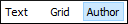

Editing XML Documents in Author Mode
This section includes topics that describe how to work with XML documents in Author mode, including its various features, actions that are available, and much more.
The Author editing mode in Oxygen XML Editor allows you to visually edit XML documents in a user-friendly interface that is similar to a WYSIWYG word processor. This makes structured authoring easier for people who are not familiar with XML and it also provides easier access to the XML structure for XML experts. Oxygen XML Editor provides support for visually editing the most commonly used XML vocabularies in Author mode, including DITA, Doc Book, TEI, and XHTML.
Adding text content in Author mode is as simple as doing so in a
standard text editor but the content is rendered similar to how you see it in the output.
Tables, images, and media objects (such as videos) are also rendered comparable to the output.
You can even play audio and video objects directly in Author mode and
it includes an intuitive Image Map
Editor. You can easily change the rendering by selecting one of the preset main styles from the Styles drop-down menu (available on the toolbar) and
combine multiple alternate
styles that behave like layers. You can also use the options in the  Tags Display Mode
drop-down menu to control how much XML markup is displayed in
Author mode and there are various features and views that provide
information about the XML structure based on your current location within the document.
Tags Display Mode
drop-down menu to control how much XML markup is displayed in
Author mode and there are various features and views that provide
information about the XML structure based on your current location within the document.
Author mode provides numerous helpful editing actions, many of which are specific to the type of document you are editing and it includes a variety of other powerful editing features, such as keyboard shortcuts, drag and drop support, a Smart Paste mechanism, and an intelligent Content Completion Assistant. Author mode also allows you to visualize and manage profiled content, you can collaborate with others with various review features (such as the ability to add comments, track changes, or highlight content), and includes many other unique features.
To switch to this mode, click the Author button at the bottom of the editing area. 
For more information about some of the features available in the visual Author editing mode, watch our video demonstration: